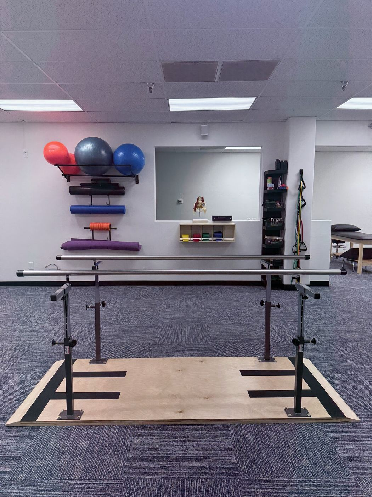
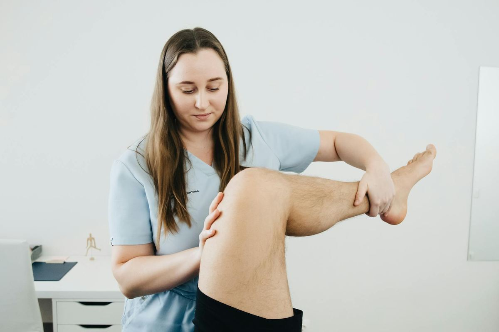
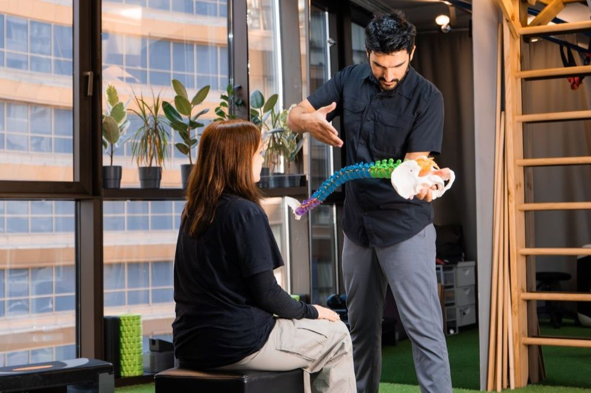
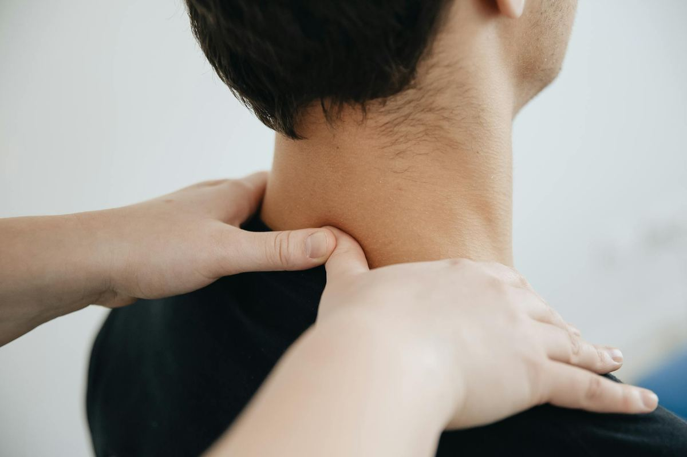
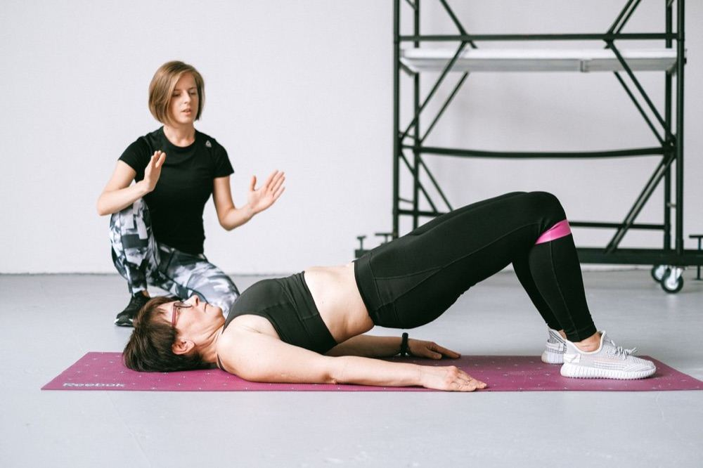
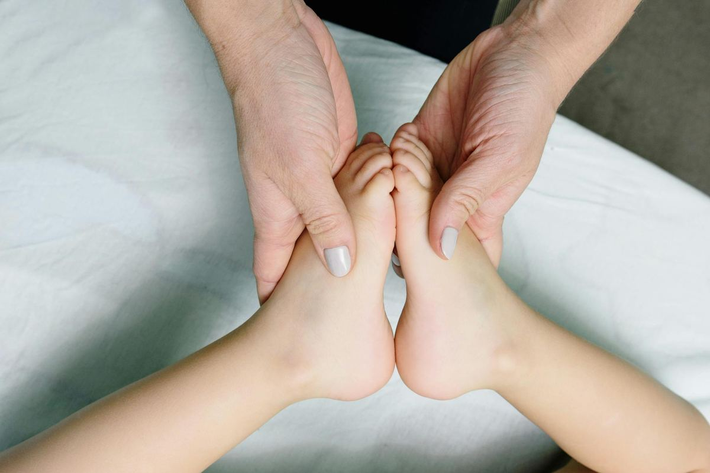
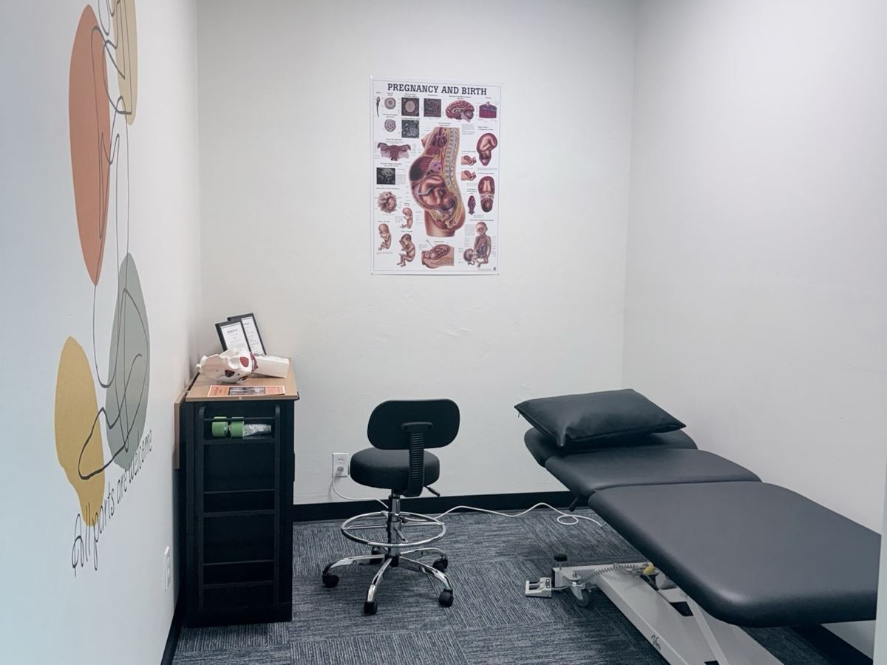
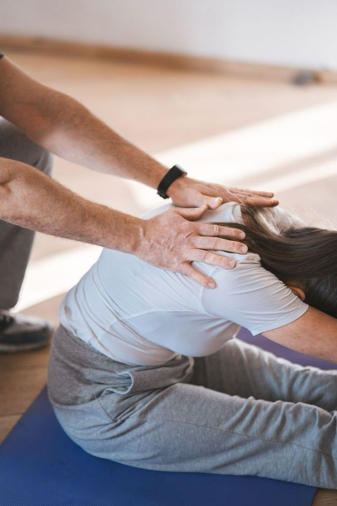

Find Answers Fast
Search a symptom, condition or question, like “heel pain”, “dizzy when I roll over” or “do I need a referral?”
Why Choose Us
Our therapists hold advanced certifications and bring deep clinical expertise to every patient's care.
Every patient receives an individualized plan tailored to their unique condition, goals, and lifestyle.
We invest in the latest therapeutic technology to ensure the most effective treatment outcomes.
From the moment you walk in, you'll experience a warm, supportive atmosphere focused on your recovery.

Expert care for joint, muscle, and bone injuries to restore strength and range of motion.
Learn more →Targeted programs to get athletes back in the game safely and at peak performance.
Learn more →
Structured rehabilitation following surgery to accelerate healing and prevent complications.
Learn more →
Evidence-based strategies to reduce chronic pain using non-pharmacological methods.
Learn more →
Specialized pelvic floor therapy addressing pain, dysfunction, and related conditions.
Learn more →
Gentle, age-appropriate therapy helping children recover, develop, and thrive.
Learn more →
Supportive care during pregnancy and postpartum recovery including pelvic health.
Learn more →
Wellness and prevention programs to keep you active, strong, and injury-free long-term.
Learn more →Injured at work? We treat workers’ comp injuries. Learn about workers’ comp physical therapy →
We're looking for passionate physical therapists ready to help us empower Bakersfield, one patient at a time.
Patient Stories
The first session was a real challenge. They took their time and patience to get the ball rolling. After twelve sessions my range of motion was much better. I thank the wonderful people who helped me regain strength and motion. Great people here at ARI.
Deepa is the first physical therapist who actually dedicated a full, uninterrupted hour to understanding my complex history and strategically targeting each issue with a personalized plan. Her focus isn’t just on in-clinic treatment, she makes sure I fully understand every exercise so I feel empowered to maintain long-lasting change on my own.
If you’re looking for professional and attentive care, Ari is the place to go! From the smiling face that greets you (Jessica) to Deepa, a highly qualified physical therapist, you are in good hands. Ari can tackle a wide range of therapy for all health needs, from sports recovery, to women’s health, to senior care, you name it. I’ve never had a bad experience here.
I had a great experience over several weeks with ARI Physical Therapy. I suffer from spinal stenosis in my neck. Deepa developed a treatment and exercise plan that quickly helped me regain most of my mobility and greatly improved my quality of life. Her and her staff were warm, friendly, and professional. Highly recommended!
Deepa is an incredible physical therapist. My husband’s been to a few and never really cared for it. This lady made him change his perspective on physical therapy. She’s not afraid to get in there. He noticed the difference with her and definitely noticed the results. We definitely recommend her.
Hands down the best physical therapist that I’ve ever been to. Deepa is very knowledgeable in what she does. Deepa is so kind and the best sense of humor. I love it that she is firm in pushing me harder when I think I can’t go any further. … Today is my last day of therapy and I’m doing exercises I haven’t been able to do in decades.
I had a great experience with Physical Therapist, Deepa! She was incredibly knowledgeable, patient, and really took the time to understand my shoulder issues. She provided targeted exercises that helped improve my strength and mobility, and made sure I was doing everything correctly. Thanks to her guidance, I’ve seen a big improvement and feel much more confident in my recovery.
My experience with ARI Physical therapy has been excellent. The therapist was professional, compassionate, and really listened to my concerns. I felt comfortable, supported, and learned helpful tools to manage challenges in my daily life after my knee surgery. I highly recommend their services to anyone looking for quality care and guidance.
ARI physical therapy has been the best place in town for effective and smooth recovery. The place is clean, very friendly staff, especially in the perfect location right next to Trader Joe’s. I have chronic hip pain, Deepa the physical therapist has been able to explain about the cause, treatment plan and helped me perfect the exercises. I have been pain free since 5 months.
I went in because I was shopping at Trader Joe’s and wanted to get info as to what type of therapy they offer… and front office actually let me speak to the Physical Therapist because I had specific personal questions. Therapist was very informative.
Great place to get your physical therapy done. The staff is friendly and very knowledgeable. They really care about making you feel better not just some cookie cutter routine.
Ari physical therapy helped me recover faster than ever! Everyone there wanted nothing but the best for me and they all wanted me to succeed!! I’m so grateful for everyone there and I owe them everything!!
Rated 5.0 out of 5 from 28 Google reviews · Read them all on Google · Leave us a review
Visit Us